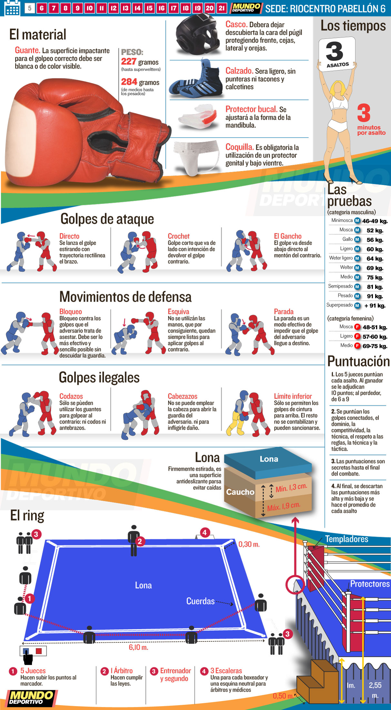

Las reglas del boxeo se pueden dividir en varios apartados:

El área de combate:
El boxeo se practica en un ring cuadrado que puede variar
desde los 4.9 x 4.9 metros hasta los 7.3 x 7.3 metros.
Lo más importante es que los cuatro lados midan lo mismo
y que cada uno de ellos esté rodeado por cuerdas.
Duración del combate:
Generalmente, los combates de boxeo se dividen en 3 asaltos
de tres minutos cada uno con un minuto de descanso entre cada uno.
Categorías de peso:
Los boxeadores compiten en diferentes categorías según su peso para
garantizar un combate justo, estos rangos se dividen en:
- Peso pluma:
Hasta 57.2kg.
- Peso ligero:
Hasta 61.2kg.
- Peso mediano:
Hasta 72.6kg.
- Peso pesado:
Más de 90.7kg.
Puntuación:
Los combates:
Los combates en el boxeo se pueden ganar knockouts o decisión de los jueces.
estos confrontamientos tienen una serie de características:
Knockdown:
Ocurre cuando un boxeador toca el suelo con cualquier parte del cuerpo
tras un golpe del adversario.
Knockout:
Tras un knockdown si el peleador no se levanta después de 10 segundos,
Se considera un knockout.
Gana el peleador que tenga un mayor número de knockouts a no ser que
Digan lo contrario los jueces, ya sea por juego sucio u otros motivos.